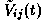
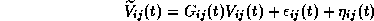
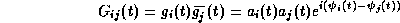

News
News
| Getting Started | Documentation | Glish | Learn More | Programming | Contact Us |
|
| VERSIONID |
News
|
aberration
abstract base class
aerial
AIPS
AIPS++
algorithm
aliased response
aliasing
altitude
altitude-azimuth mount
anomalistic year
antenna
antenna gain
antenna/i.f. gain
antenna/i.f. phase
antenna temperature
aperture efficiency
aperture synthesis
application developer
application program
array
array processor
association
ATCA
atmospheric attenuation
ATNF
atomic clock
atomic time
autocorrelation
azimuth
1. In an imaging system, the failure to obtain a simple point-to-point correspondence between the astronomical object and the image, as in, e.g. chromatic aberration, spherical aberration.
2. In astrometry, the angular displacement of the apparent
direction to an astronomical object resulting from the Earth's orbital
motion with velocity v and the finite velocity of light c. For earth-based
observers, an object annually describes an ellipse on the celestial sphere whose semi-major
axis is arctan(v/c),
i.e. 20.496"; the eccentricity of the ellipse is zero for an object at
the ecliptic pole, and the ellipse
degenerates to a straight line for an object in the ecliptic plane.
and the finite velocity of light c. For earth-based
observers, an object annually describes an ellipse on the celestial sphere whose semi-major
axis is arctan(v/c),
i.e. 20.496"; the eccentricity of the ellipse is zero for an object at
the ecliptic pole, and the ellipse
degenerates to a straight line for an object in the ecliptic plane.
In object-oriented programming, a class which has no implementation, only an interface. Thus it can only be used polymorphically and there must be derived classes which inherit from it.
(British) English synonym for antenna.
The NRAO's Astronomical Image Processing System, the (still active) predecessor to AIPS++. Also known as Classic AIPS. Written in FORTRAN. For details, consult the AIPS Home Page at http://www.cv.nrao.edu/aips/.
Astronomical Information Processing System: The follow on to AIPS. Written primarily in C++.
A rule of procedure to be followed to solve a mathematical problem, frequently involving repetition of an operation or operations. Technically, an algorithm must reach a result after a finite number of steps. From al-Khuwar-rizmi, a ninth-Century Arab mathematician.
In radio interferometry, a spurious feature due to a source or a sidelobe that lies outside the field of view. Aliased responses can be suppressed by judicious choice of the gridding convolution function.
1. In spectral analysis, error which is due to undersampling. One may wish to sample a signal that is known to be band-limited, but whose bandwidth is not known a priori. The Fourier transform of Shannon's series is periodic; aliasing is of the form of an overlapping, or superposition of these "replicated" spectra. See also Nyquist sampling rate and aliased response.
2. In computer graphics, the jagged artifact in a line or curve that results from drawing on a raster grid.
3. In computer programming languages, giving access to a region of memory through more than one language entity (e.g., pointers in C or C++). Aliasing makes it harder for compilers to optimize code, as they may not understand all the ways in which a given memory location might be modified.
Angular distance of a celestial object above the horizon plane, i.e. the plane perpendicular to the local vertical as defined by a plumb-line. Synonymous with the elevation angle.
A mount for a steerable antenna (or more generally, for a telescope structure), by which the antenna is driven in altitude by rotating it around a horizontal axis (elevation axis) and in azimuth by rotating it around a vertical axis (azimuth axis). Gravity always acts on the reflector in the same plane, thus simplifying design and reducing cost. The aperture rotates with repect to the sky as the antenna tracks a celestial source
The interval (365.2596 mean solar days) between successive perihelion passages of the Earth.
A physical structure that responds to radiation to produce an amplifiable electronic signal by means of one or more feeds. At any operating frequency, an antenna may have more than one receptor associated with each feed, e.g. responding to different polarizations. The antennas of some single dish telescopes are equipped with multi-feed arrays.
1. In radio engineering, the ratio of the power transmitted by an antenna in a certain direction to that which would be transmitted in the same direction if all the power supplied to the antenna was radiated isotropically.
2. In radio interferometric calibration, a term often used as a contraction for antenna/i.f. gain defined below. The context usually removes any possibility of confusion with the engineering term.
The visibility  observed on the i-j baseline at time t is generally related to the true visibility V by:

where
 is a baseline-based complex offset, and
is a baseline-based complex offset, and
Many systematic errors that affect measurements with radio interferometers occur before the signals are correlated and are therefore multiplicative in the visibility amplitude and additive in the visibility phase. It is therefore common to approximate the complex gain G(t) simply as the product of two complex antenna-based antenna/i.f. gains g(t):

where the bar denotes the complex conjugate. The g(t) terms represent errors that are ascribable to individual antennas, their feeds, receptors and the associated i.f./l.o. chains. They may also include some serious sources of error, e.g.:
that conform fairly well to an antenna-based model, even though they physically originate outside the antenna/feed/receptor/i.f. hardware. The multiplicative gain approximation, ignoring the baseline-based gain component and the additive offset terms, is therefore exploited heavily in the self-calibration algorithm. See also antenna/i.f. phase, isoplanaticity assumption, and correlator offset.
The antenna/i.f. phase for an antenna of an interferometer
array is given by the argument (phase)  of the antenna/i.f. gain g.
Often in self-calibration one
assumes that no amplitude errors are present and solves only for the
antenna/i.f. phases.
of the antenna/i.f. gain g.
Often in self-calibration one
assumes that no amplitude errors are present and solves only for the
antenna/i.f. phases.
A measure T of the power per unit bandwidth received from a source by an antenna, obtained by equating that power to kT.
The ratio of the effective area of an antenna, which measures its ability to respond to radiation of a particular polarization, to its geometrical area.
The method whereby the information-gathering capability of a large aperture is synthesized by measurements made with one or more pairs of smaller apertures operated together as interferometers. The method is based on two principles:
A person who writes application programs. This person typically uses C++ libraries or writes CLI scripts.
A program that performs a specific function directly for the end user of a software system. This is in contrast to the operating system, server processes, scripts and libraries which exist to support application programs. A programmer who writes application programs is called an application developer. In AIPS++, this person typically uses C++ libraries or writes CLI scripts.
1. In radio astronomy, an ensemble of antennas or antenna elements configured so as to improve the resolution, sensitivity, or field of view of their response to astronomical sources relative to that provided by a single such antenna or element.
2. In computing, a collection of identically typed data items distinguished by their indices or "subscripts". A single ordinary variable (scalar) could be considered a zero-dimensional array. A vector is a one-dimensional array.
3. In AIPS++ specifically, a Lattice for which all elements are unique and fit into memory.
A computer peripheral, popular in the 1980's, capable of performing certain floating-point computations, especially vector and matrix operations, at high speed and independently of the host computer's CPU. Often abbreviated to "AP".
In object-oriented programming, a relationship between one type of object and another. For example, in AIPS++, the MeasurementSet needs to know which particular TelescopeModel describes its state of calibration. In C++, an association is often implemented as a pointer. See also Catalog.
Australia Telescope Compact Array: An East-West array of six antennas operated by the ATNF as a connected-element interferometer with a maximum baseline of 6 km. It is located at the Paul Wild Observatory near Narrabri, NSW, Australia. For more information, see http://www.atnf.csiro.au/ATNF/ATNFNarrabri/Site_info.html.
Decrease in intensity of signal from a celestial source caused by absorption and scattering in the Earth's atmosphere. At most wavelengths, increases away from the zenith and toward the horizon.
Australia Telescope National Facility: A division of the Commonwealth Scientific and Industrial Research Organization (CSIRO), which operates the Australia Telescope, a group of radio telescopes distributed throughout New South Wales. A member of the AIPS++ consortium. For more information, see the ATNF Home Page at http://wwwatnf.atnf.csiro.au/.
A high-stability oscillator based on atomic transitions. Three types are commonly used in radio astronomy:
Cesium-beam-tube resonators are used as the standard for atomic time because their absolute frequencies are relatively insensitive to environmental factors. For details, see the U.S. Naval Observatory's WWW Page on Cesium Atomic Clocks at http://tycho.usno.navy.mil/cesium.html.
Rubidium-gas-cell resonators and hydrogen masers are more commonly used as local oscillators in VLBI experiments because they provide more stable signals when their environment is carefully controlled.
Time based on the atomic second, i.e. on the unit defined as 9,192,631,770 periods of the radiation from the transition between the two hyperfine levels of the ground state of the cesium-133 atom undisturbed by external fields. Leap seconds may be introduced to keep atomic time within 0.9 seconds of Universal Time.
The correlation of a signal with itself, as opposed to the cross correlation between two different signals. The Fourier transform of the autocorrelation function of a signal is the signal's power spectrum. This relationship provides the basis for autocorrelation spectrometers.
An angle measured from the north point eastward (or, alternatively, from the south point westward) to the intersection between the horizon plane and the vertical circle passing through a celestial object and the zenith.
You could now go back to the:
Copyright © 1995,1996,1997,1999,2000 Associated Universities Inc., Washington, D.C.
abridle@nrao.edu, 26 August 1996, 16:55 EDT